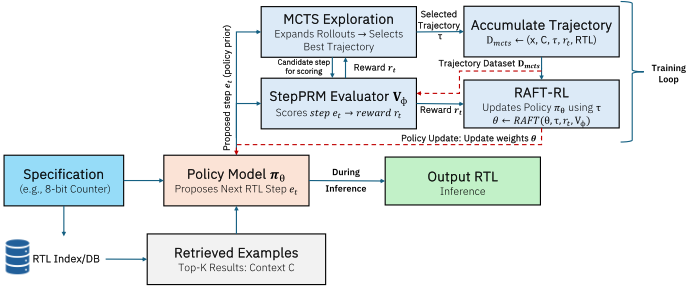
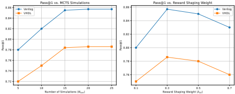

StepPRM-RTL: Stepwise Process-Reward Guided LLM Fine-Tuning for Enhanced RTL Synthesis
StepPRM-RTL：逐步过程奖励引导的 LLM 微调用于增强 RTL 综合
简介
该论文针对 LLM 生成 Verilog/VHDL 代码时缺乏对中间设计决策的监督、长程推理易出错的问题，提出 StepPRM-RTL 框架。方法上将 RTL 构建模化为"设计步骤"序列（每步含设计 rationale 与代码增量编辑），训练步级过程奖励模型 StepPRM 对中间步骤打分，用其引导 MCTS 探索高质量轨迹，再通过检索增强微调 RAFT 以奖励加权更新生成策略（基于 Qwen3-8B-Instruct，结果验证用 Icarus Verilog 与 GHDL+VUnit）。在 Verilog-Eval/VHDL-Eval 上 Pass@1 达 0.857/0.786，推理保真度超 80%，较最优基线提升超 10%；消融表明去掉 PRM、MCTS 或奖励加权 RAFT 分别使 Pass@1 下降约 7.6、4.7-5.0、6 个百分点。对团队而言，这是 AI 辅助 RTL 生成（能力域 2.7）方向可直接借鉴的最新方法学参考。
问题
LLM 自动生成功能正确的 RTL（Verilog/VHDL）代码面临长程推理、多步依赖与严格正确性约束。现有监督式方法只捕捉表面代码模式；结果驱动（outcome-based）方法只在最终设计层面给反馈，无法监督复位逻辑组织、控制路径转移、always 块间 enable 协调等中间决策；已有 token 级 PRM 与硬件语义不匹配（有意义的 RTL 决策常跨越语句、模块与信号组），导致 credit assignment 噪声且不稳定；MCTS 等结构化搜索在 RTL 综合领域也基本未被探索。
方法
将 RTL 生成建模为语义有意义的设计步骤序列 e_t=(rationale, 代码编辑)，构建四组件迭代训练闭环：(1) Stepwise Trajectory Construction：用 LLM（辅以 AST 分析）把规范 RTL 实现分解为逐步轨迹，初始化策略与 StepPRM；(2) StepPRM：以 Bradley-Terry 偏好学习训练步级奖励模型，并用基于 AST 树编辑相似度的部分 rollout 一致性做奖励塑形；(3) PRM-guided MCTS：UCB 选择节点、StepPRM 直接初始化 Q 值、结构可行性检查（未匹配 always 块、未声明信号、组合环）剪枝，扩展高质量轨迹集；(4) RAFT：检索仓库级上下文（Qwen3-Embedding-4B），以 StepPRM 奖励加权轨迹微调 Qwen3-8B-Instruct。实现基于 PyTorch 与 2-4 张 NVIDIA A100，结果验证用 Icarus Verilog（Verilog）与 GHDL+VUnit（VHDL）。
关键结果
Verilog-Eval 上 Pass@1 达 0.857，VHDL-Eval 上达 0.786，推理保真度分别为 82.5% 与 80.2%，均超过所有基线（VeriThoughts、Verigen、RTLCoder、CodeV、CoDes、GPT-4o、Qwen3-8B RAG）
较最优先前方法在功能正确性与推理保真度指标上提升超过 10%
消融：去掉 PRM 引导 MCTS（改为纯采样 K=20），Pass@1 从 0.857 降至 0.810（Verilog）、0.786 降至 0.738（VHDL），约 4.7-5.0 pp，推理保真度降 4-4.5 pp
消融：去掉步级 PRM 仅用结果奖励，Pass@1 从 0.857 降至 0.781（Verilog，约 7.6 pp）、0.786 降至 0.709（VHDL），推理保真度从 82.5%→73.1%、80.2%→70.8%
消融：去掉奖励加权 RAFT（所有轨迹等权），Pass@1 从 0.857 降至 0.796（Verilog）、0.786 降至 0.721（VHDL），约 6 pp，推理保真度降 7-8 pp
超参敏感性：MCTS 仿真次数 N_sim=15 即接近 20-25 次的性能（Verilog Pass@1 随仿真次数从 5 到 25 由 0.78 升至 0.857）；奖励塑形权重 λ_sh=0.3 时 Pass@1 最佳
创新点
自称首个为 HDL 定义并评分语义有意义中间推理步骤的框架，解决 token 级打分与硬件级行为（跨语句/模块/信号组）不匹配的问题；将 StepPRM 引导的 MCTS 结构化探索与 RAFT 策略精炼统一为一条迭代训练管线，StepPRM 直接为 MCTS 的部分代码提供稠密 Q 值初始化，而非仅在终态给奖励；相比 outcome-only 的 RLHF 方式，提供硬件对齐的步级稠密监督与可解释推理轨迹。
团队参考意义
相关度级别：high
命中能力域：2.2 RTL 设计与实现 | 2.7 EDA/验证自动化与 AI 辅助
理由：直接命中 2.7（LLM/AI 辅助 RTL 生成）的核心技术：面向 Verilog/VHDL 的 LLM 微调、过程奖励模型、MCTS 探索与检索增强微调，是 DAC 2026 上 AI 辅助硬件设计自动化的代表性工作；其目标是生成功能正确、结构合理的 RTL，与 2.2 的 RTL 设计质量诉求相关。团队在 LPDDR/UCIe/HBM4 等 IP 交付中存在大量模块级 RTL 编码、编码规范检查与回归验证工作，步级奖励+仓库检索的思路可迁移为内部 RTL 生成助手；论文以自检 testbench 仿真作为结果奖励，可与团队既有验证资产衔接。
建议动作：深入精读并做内部分享
中文全文
arXiv:2606.04246v1 [cs.AI] 2026年6月2日
Abstract
数字硬件设计的寄存器传输级（RTL）代码自动生成仍然具有挑战性，其原因在于长程推理、多步骤依赖关系，以及Verilog和VHDL中严格的正确性约束。我们提出StepPRM-RTL，这是一种新颖的框架，它结合了逐步轨迹建模、过程奖励建模（PRM）和检索增强微调（RAFT），以同时提升基于大语言模型（LLM）的RTL代码生成的功能正确性与推理保真度。StepPRM-RTL从规范解构建逐步推理轨迹，其中每一步都包含推理依据和增量式代码修改。PRM对中间步骤进行评估，提供密集反馈，在RAFT微调过程中引导强化学习式的更新。蒙特卡洛树搜索（MCTS）探索备选推理路径，以高质量轨迹丰富训练数据集。这种逐步奖励与结果感知奖励的集成，使模型既能学习如何构建正确的RTL，也能学习为何这样构建，从而超越标准的监督训练或基于结果的训练，提升长程推理能力。在基准Verilog和VHDL数据集上的实验评估表明，StepPRM-RTL在功能正确性和推理保真度指标上超越此前最佳方法10%以上。消融研究证实，PRM引导的奖励与逐步轨迹探索的结合是其性能的关键。StepPRM-RTL可跨RTL语言泛化，并为高保真、可解释的代码生成提供了可扩展的框架，为LLM辅助的硬件设计自动化树立了新的标准。
CCS Concepts
· 硬件 → 硬件描述语言与编译；· 计算方法学 → 自然语言生成。

本作品采用知识共享署名 4.0 国际许可协议进行许可。DAC '26, Long Beach, CA, USA
© 2026 版权归所有者/作者所有。
ACM ISBN 979-8-4007-2254-7/2026/07
https://doi.org/10.1145/3770743.3804218
StepPRM-RTL: Stepwise Process-Reward Guided LLM Fine-Tuning for Enhanced RTL Synthesis
Prashanth Vijayaraghavan prashanthv@ibm.com IBM研究院 美国加利福尼亚州圣何塞
Apoorva Nitsure Apoorva.Nitsure@ibm.com IBM研究院 美国加利福尼亚州圣何塞
Luyao Shi luyao.shi@ibm.com IBM研究院 美国加利福尼亚州圣何塞
Ehsan Degan edehgha@us.ibm.com IBM研究院 美国加利福尼亚州圣何塞
Vandana Mukherjee vandana@us.ibm.com IBM研究院 美国加利福尼亚州圣何塞
Keywords
RTL 代码生成、Verilog、VHDL、大语言模型、强化学习、过程奖励建模、逐步推理、蒙特卡洛树搜索、MCTS、LLM、RL、RAFT、检索增强微调、硬件设计自动化。
ACMReference Format:
Prashanth Vijayaraghavan、Apoorva Nitsure、Luyao Shi、Ehsan Degan 和 Vandana Mukherjee。2026。StepPRM-RTL：面向增强 RTL 综合的逐步过程奖励引导 LLM 微调。载于第 63 届 ACM/IEEE 设计自动化会议（DAC '26），2026 年 7 月 26-29 日，美国加利福尼亚州长滩。ACM，美国纽约州纽约，7 页。https://doi.org/10.1145/3770743.3804218
1 Introduction
自动生成寄存器传输级（Register-Transfer Level，RTL）代码仍然是电子设计自动化（Electronic Design Automation，EDA）领域的核心挑战。与通用编程不同，RTL 不仅要求语法正确，还要求精确的时序、并发与结构行为，而这些行为决定了电路的功能。一次错位的状态更新或一条未正确门控的使能路径都可能跨模块传播，即使代码在语法上仍然有效，也会破坏数据通路。因此，生成语义与功能均正确的 Verilog/VHDL 代码既具有重要价值又缺乏充分探索，与工业设计生产力直接相关。
当前的 RTL 生成方法 [3, 5, 8, 10, 17] 主要依赖对代码语料库的监督学习，能够捕捉表层模式，却无法掌握组装正确的控制逻辑与数据通路逻辑所需的推理序列。以结果为导向的方法 [1, 20] 仅在最终设计层面评估正确性，无法为中间决策提供监督，例如如何组织复位逻辑、对齐控制通路的转换，或在多个 always 块之间协调使能信号。因此，这些模型难以应对长程依赖，也无法可靠地塑造多步设计轨迹。
软件代码生成领域的最新进展试图通过引入过程奖励模型（Process Reward Model，PRM）对中间步骤进行评分来解决这些问题 [9, 22]。然而，这些 PRM 在词元（token）级别上运行，这与硬件语义存在根本性的错配：有意义的 RTL 决策往往跨越多条语句、多个模块和信号组，使得词元级别的信用分配充满噪声且不稳定。此外，蒙特卡洛树搜索（Monte-Carlo Tree Search，MCTS）等结构化搜索技术在推理密集型领域 [7, 15] 中得到广泛应用，但在 RTL 综合中仍基本未被探索。
为解决这些局限性，我们提出 StepPRM-RTL，这是一种推理感知的 RTL 生成框架，引入了与硬件语义对齐的步骤级监督。每个推理步骤由一个可解释的推理依据及其对应的代码修改组成，使过程奖励模型（StepPRM）能够在有意义的 RTL 行为粒度上评估各种选择。StepPRM 进一步支持 PRM 引导的蒙特卡洛树搜索（MCTS）探索，其中生成器针对同一规格提出备选推理路径，MCTS 利用步骤级奖励和轻量级可综合性检查对其进行评估。由此产生一组多样化的高价值轨迹，它们超越了监督式分解的范围，同时仍立足于可验证的硬件逻辑。最后，StepPRM-RTL 将这些轨迹整合到检索增强微调（RAFT）框架 [24] 中。RAFT 从相似设计中检索规范推理步骤，并利用基于 StepPRM 的中间奖励来稳定策略精调。这将步骤级推理监督、结构化轨迹探索与基于检索的上下文整合到单一连贯的训练流水线中，从而实现有效的长程 RTL 代码生成。
图 1 总结了该工作流程：（1）提取规范的逐步轨迹；（2）使用 StepPRM 引导的 MCTS 扩展推理空间；（3）在扩展后的轨迹集上精调 StepPRM；（4）使用带步骤级奖励的 RAFT 更新生成器。这一迭代循环在保持与 RTL 设计原则语义对齐的同时，联合改进策略与奖励模型。我们的贡献总结如下：
面向 RTL 的步骤级过程奖励：我们提出 StepPRM-RTL，这是首个为硬件描述语言（HDL）定义并评分语义上有意义的中间推理步骤的框架，解决了词元级评分与硬件级行为之间的不匹配问题。
统一推理流水线：我们提出一个集成流水线，将 StepPRM 引导的 MCTS 探索与基于 RAFT 的策略精调相结合，实现稳定的长程信用分配和以检索为基础的推理。
全面评估：在 Verilog 和 VHDL 基准上开展的大量实验表明，与监督式基线和基于奖励的基线相比，步骤级推理质量、pass@k、功能正确性和泛化能力均取得显著提升。
2 Problem Formulation
我们研究从行为规范生成功能正确的寄存器传输级（RTL）设计的任务。设 𝑥 表示输入规范（例如，模块行为的自然语言描述），并设 𝑐 ★ 为对应的标准 Verilog/VHDL 实现。我们没有将硬件描述语言（HDL）生成视为扁平的词元预测，而是将 RTL 构建建模为一系列语义上有意义的设计步骤。每个步骤表示为 𝑒 𝑡 = ( 𝑟 𝑡 , 𝛿 𝑡 )，其中 𝑟 𝑡 是描述某项硬件设计决策（例如添加同步复位或传播使能信号）的自然语言推理依据，𝛿 𝑡 是应用于当前部分实现的代码编辑。依次应用这些编辑会产生部分设计 𝑐 0 , 𝑐 1 , . . . , 𝑐 𝑇，满足 𝑐 𝑡 = 𝛿 𝑡 ( 𝑐 𝑡 - 1 )，其中 𝑐 0 为空或基于模板，𝑐 𝑇 为最终设计。因此，一条轨迹为 𝜏 = ⟨ 𝑒 1 , . . . , 𝑒 𝑇 ⟩，由策略模型 𝜋 𝜃 ( 𝑒 𝑡 | 𝑥, 𝑐 𝑡 - 1 ) 生成，该模型同时以规范和不断演进的设计状态为条件。
为了监督中间推理质量，我们定义了一个步骤级过程奖励模型（StepPRM）𝑉 𝜙 ( 𝑒 𝑡 , 𝑐 𝑡 - 1 , 𝑥 )，它为每个步骤分配一个语义分数，以反映结构正确性、与 RTL 设计意图的一致性以及与硬件语义的对齐程度。最终正确性通过基于编译、仿真和测试平台验证的结果奖励 𝑅 out ( 𝑐 𝑇 ) 来评估。在本工作中，我们利用两类数据集：一是自研的 RTL-IR 语料库，其包含规范、代码和摘要的组合以及由此导出的分步轨迹，用于训练 𝜋 𝜃 和 𝑉 𝜙；二是 VerilogEval 和 VHDL-Eval，这两个严格留出的基准仅用于评估泛化能力和功能正确性。
2.1 Objective
我们的目标是学习一个具备推理感知能力的策略，使其能够生成具有合理中间决策和正确最终实现的高质量轨迹。形式化地，我们最大化期望轨迹价值：max 𝜃 E 𝜏 ∼ 𝜋 𝜃 (·| 𝑥 ) [V( 𝜏 )]，其中轨迹的价值结合了步骤级奖励与结果级奖励：
其中 𝛼 和 𝛽 分别用于权衡语义推理质量与最终功能性。这一公式化为长程 RTL 构建提供了密集且与硬件对齐的监督信号。
3 Methodology: StepPRM-RTL Framework 3.1 Overview
我们提出 StepPRM-RTL 1，一个由强化学习（RL）引导的框架，用于从自然语言或结构化规范生成正确的寄存器传输级（RTL）设计。StepPRM-RTL 将 RTL 生成建模为一系列语义上有意义的设计步骤，并集成了四个紧密耦合的组件：(i) 从规范 RTL 代码构建逐步轨迹，以获得高质量的推理示范；(ii) 步骤级过程奖励模型（StepPRM）𝑉 𝜙，为中间设计决策赋予语义评分；(iii) PRM 引导的蒙特卡洛树搜索（MCTS），用于探索备选推理路径并收集多样化、高价值的轨迹；以及 (iv) 检索增强微调（RAFT），利用检索到的轨迹结合 StepPRM 奖励来改进生成策略 𝜋 𝜃。该框架以迭代循环的方式运行：首先将规范 RTL 实现分解为逐步轨迹，以引导启动 StepPRM。初始的 PRM 引导 MCTS 探索，生成超越规范示例的多样化、高价值推理轨迹。随后，这些轨迹被用于改进 PRM，提升其赋予语义上有意义的中间奖励的能力。最后，通过 RAFT 微调更新生成策略 𝜋 𝜃，将检索到的轨迹上下文与 StepPRM 评分相结合，以强化正确的中间推理。这一循环由轨迹收集、PRM 改进以及随后的策略更新组成，不断重复直至收敛，从而确保奖励模型与生成器均得到持续改进。通过统一可解释的步骤监督、结构化探索与奖励引导的策略改进，StepPRM-RTL 提升了长程推理的保真度以及最终 RTL 的正确性。
1 为 Step-level Process Reward Model for RTL Synthesis（面向 RTL 综合的步骤级过程奖励模型）的缩写

3.2 Stepwise Trajectory Construction
StepPRM-RTL 的第一个组件是逐步轨迹构建（Stepwise Trajectory Construction），它将规范的 RTL 实现分解为语义上有意义的中间设计步骤。给定规格说明 𝑥 及其规范的 RTL 实现 𝑐 ★（Verilog 或 VHDL），我们生成一条逐步轨迹 𝜏 = ⟨ 𝑒 1 , 𝑒 2 , . . . , 𝑒 𝑇 ⟩，其中 𝑒 𝑡 = ( 𝑠 𝑡 , 𝛿 𝑡 )，每个步骤 𝑒 𝑡 将人工或模型生成的推理说明 𝑠 𝑡 与应用于部分实现 𝑐 𝑡 - 1 的相应代码编辑 𝛿 𝑡 配对。最终的部分实现 𝑐 𝑇 应能重构出 𝑐 ★。
在实践中，这种分解利用大语言模型（LLMs）来提出推理说明和代码编辑，并可选择性辅以抽象语法树（AST）分析，以确保语法与结构的一致性。由此产生高质量、可解释的演示样本 ( 𝑥, 𝜏 )，它们为初始化生成策略 𝜋 𝜃 以及自举步骤级过程奖励模型（StepPRM）提供了监督训练对。与 token 级 PRM 不同，StepPRM 学习为整个步骤分配语义奖励，从而改善下游强化学习中的稳定性与信用分配。表 1 展示了将一个简单的 2 位计数器设计分解为逐步轨迹的过程。这些轨迹共同构成初始训练池 D 0，用于同时初始化 StepPRM 𝑉 𝜙 与监督策略 𝜋 𝜃。这一自举阶段建立了密集的步骤级监督，使后续的迭代探索与奖励引导的策略改进成为可能。
3.3 Step-Level Process Reward Model (StepPRM)
给定自举得到的轨迹数据集 D 0 = {( 𝑥, 𝜏 )}，步骤级过程奖励模型（StepPRM）的目标是学习一个函数 𝑉 𝜙 : ( 𝑥, 𝑒 1: 𝑡 ) ↦→ R，该函数在规格 𝑥 和部分推理轨迹 𝑒 1: 𝑡 = ⟨ 𝑒 1 , . . . , 𝑒 𝑡 ⟩ 的条件下，为每个中间步骤 𝑒 𝑡 分配一个标量奖励。与 token 级奖励模型不同，StepPRM 在语义步骤粒度上运行，从而能够在长程 RTL 综合轨迹上实现稳定的信用分配。
3.3.1 基于规范轨迹的监督偏好学习。通过规范分解获得的每条逐步轨迹 𝜏 = ⟨ 𝑒 1 , . . . , 𝑒 𝑇 ⟩ 对应于一系列高质量的中间决策。在 StepPRM 训练中，我们将每个规范步骤 𝑒 ★ 𝑡 视为优于由模型生成或通过句法变异获得的扰动步骤或低质量步骤 ˜ 𝑒 𝑡。对于每个训练实例，我们构造一个配对：( 𝑥, 𝑒 1: 𝑡 - 1 , 𝑒 ★ 𝑡 ) , ( 𝑥, 𝑒 1: 𝑡 - 1 , ˜ 𝑒 𝑡 ) ，其偏好标签为 𝑒 ★ 𝑡 ≻ ˜ 𝑒 𝑡。StepPRM 使用奖励建模和基于人类反馈的强化学习（RLHF）中广泛采用的标准偏好排序目标（Bradley-Terry / 逻辑斯蒂偏好模型）进行训练 [4, 14]：
其中 𝜎 (·) 为 sigmoid 函数。该目标鼓励 StepPRM 为语义正确的步骤分配更高的奖励，并对结构无效或逻辑不连贯的步骤施加惩罚。
3.3.2 基于部分 rollout 一致性的奖励塑形。由于 RTL 代码只有在完整时才可验证，StepPRM 必须在没有显式功能仿真的情况下推断步骤质量。为解决这一问题，我们引入一个基于一致性的塑形项，利用部分实现 𝑐 𝑡 与最终规范代码 𝑐 ★ 之间的结构对齐关系。设 𝐴 ( 𝑐 𝑡 , 𝑐 ★ ) 表示通过抽象语法树（AST）树编辑相似度或结构匹配计算得到的对齐分数。我们将步骤 𝑒 𝑡 的塑形奖励目标定义为：
其中 𝛼 ∈ [ 0 , 1 ] 控制规范监督与结构感知塑形之间的平衡。直观地说，当某一步骤与规范轨迹匹配时，指示函数 1 [·] 提供强烈的离散信号；而当步骤是新颖的或部分对齐时，𝐴 (· , ·) 则为部分正确性提供连续的代理度量。此外，还训练 StepPRM 对该塑形奖励进行回归：
这有助于校准，并为泛化提供更密集的梯度。
3.3.3 最终训练目标。完整的 StepPRM 损失将偏好学习与塑形相结合：
其中 𝜆 sh 对塑形项进行加权。这一复合目标确保 StepPRM 同时捕捉推理步骤之间的相对偏好结构，以及由部分结构一致性所度量的绝对语义质量。
| Step 𝑒 𝑡 | Rationale 𝑟 𝑡 | Code Edit 𝛿 𝑡 |
|---|---|---|
| 1 | Declare module interface and output registers | module counter(clk, reset, out); input clk, reset; output reg [1:0] out; |
| 2 | Add always block triggered by clock and reset | always @(posedge clk or posedge reset) begin ... end |
| 3 | Assign reset behavior to initialize counter | if (reset) out <= 2'b00; |
| 4 | Increment counter on clock edge | else out <= out + 1; |
| 5 | End module | endmodule |
| Step 𝑒 𝑡 | Rationale 𝑟 𝑡 | Code Edit 𝛿 𝑡 |
3.3.4 展开（rollout）过程中的奖励分配。在推理阶段或 MCTS 引导的探索过程中，StepPRM 为每个新生成的候选步骤分配奖励：𝑟 𝑡 = 𝑉 𝜙 ( 𝑥, 𝑒 1: 𝑡 )。这些逐步奖励提供了密集且具有语义依据的反馈，能够支持高效探索，并缓解 RTL 综合任务中常见的长时程信用分配问题。
3.4 PRM-Guided MCTS
3.5 Retrieval-Augmented Fine-Tuning (RAFT)
After StepPRM-guided MCTS expands the trajectory space, the final component of StepPRM-RTL is Retrieval-Augmented FineTuning (RAFT), which refines the generation policy 𝜋 𝜃 using (i) retrieved repository-level context, and (ii) high-quality trajectories weighted by StepPRM-derived rewards. RAFT integrates retrievalbased grounding with reward-weighted policy optimization, enabling the policy to internalize both semantic reasoning structure and hardware-specific design patterns.
3.5.1 Retrieval Model for Repository-Level Context. Given a specification 𝑥 , RAFT retrieves relevant RTL files, design patterns, module templates, or prior verified trajectories from a repository R . We encode each repository element 𝑑 ∈ R using a domain-tuned encoder 𝑔 (·) and compute similarity with the query encoding 𝑞 ( 𝑥 ) : 𝑠 ( 𝑑 | 𝑥 ) = sim ( 𝑞 ( 𝑥 ) , 𝑔 ( 𝑑 )) Top𝑘 documents, C( 𝑥 ) = { 𝑑 1 , . . . , 𝑑 𝑘 } , are retrieved & concatenated with the trajectory prefix for conditioning.
3.5.2 Reward-Weighted Trajectories. For each high-value MCTS trajectory ˆ 𝜏 = ⟨ 𝑒 1 , . . . , 𝑒 𝑇 ⟩ , StepPRM provides stepwise rewards: 𝑟 𝑡 = 𝑉 𝜙 ( 𝑥, 𝑒 1: 𝑡 ) . We compute a normalized trajectory-level weight:
where 𝛽 controls reward sensitivity. This weighting mechanism resembles advantage-weighted regression in RL fine-tuning and preference-based policy optimization, but adapted to step-level rewards and trajectory supervision.
| Model. | Pass@1.Verilog | Pass@1.VHDL | Reasoning Fidelity (%).Verilog | Reasoning Fidelity (%).VHDL |
|---|---|---|---|---|
| Prompt-based Models | Prompt-based Models | Prompt-based Models | Prompt-based Models | Prompt-based Models |
| Vanilla Prompting (GPT-4o) | 0.543 | 0.285 | - | - |
| CoDes (GPT-4o) | 0.602 | 0.348 | - | - |
| Finetuning-based Models | Finetuning-based Models | Finetuning-based Models | Finetuning-based Models | Finetuning-based Models |
| RTLCoder (Mistral) | 0.625 | - | - | - |
| CodeV (CodeQwen) | 0.532 | - | - | - |
| VeriThoughts | 0.755 | - | 60.4 | - |
| Finetuning-based Models | Finetuning-based Models | Finetuning-based Models | Finetuning-based Models | Finetuning-based Models |
| RAG-CodeBERT (GPT-4o) | 0.688 | 0.487 | - | - |
| RAG-FT (GPT-4o) | 0.719 | 0.531 | - | - |
| Our Model Variants | Our Model Variants | Our Model Variants | Our Model Variants | Our Model Variants |
| StepPRM-RTL (Full) | 0.857 | 0.786 | 82.5 | 80.2 |
| No MCTS (Sampling-Only) | 0.810 | 0.738 | 78.2 | 76.5 |
| Supervised RAFT Only | 0.796 | 0.721 | 75.3 | 73.0 |
| No PRM | 0.781 | 0.709 | 73.1 | 70.8 |
| Model. | Pass@1.Verilog | Pass@1.VHDL | Reasoning Fidelity (%).Verilog | Reasoning Fidelity (%).VHDL |
3.5.3 Policy Update. The policy is fine-tuned to maximize the likelihood of high-value trajectories given the retrieved context:
This objective encourages the model to reproduce high-reward decision sequences while grounding them in repository-level retrieved signals. Compared to standard supervised fine-tuning, RAFT introduces two key improvements: (a) retrieval grounding, which exposes the policy to reusable structural patterns and contextually relevant design idioms drawn from existing repositories; and (b) reward weighting, which prioritizes trajectories that StepPRM and MCTS jointly deem semantically consistent and structurally valid.
3.5.4 Iterative Integration with StepPRM and MCTS. RAFT closes the StepPRM-RTL loop. After each RAFT update, which is: 𝜋 ( 𝑘 + 1 ) 𝜃 ← RAFT 𝜋 ( 𝑘 ) 𝜃 , the improved policy becomes the proposal distribution for the next iteration. This yields higher-quality search rollouts, which in turn allow StepPRM to refine reward estimates from a more diverse and semantically richer trajectory distribution.
3.6 Implementation Details
我们基于 PyTorch [6] 实现 StepPRM-RTL，使用 2-4 块 NVIDIA A100 GPU 在逐步轨迹上对 Qwen38B-Instruct [21] 进行微调。StepPRM 以规格说明、部分代码状态和当前步骤（推理说明 + 编辑）的拼接作为输入，并通过带有标量回归头的 Transformer 进行编码。检索采用在硬件描述语言（HDL）代码仓库上通过对比学习训练的 Qwen3Embedding-4B [25]，并在 RAFT 微调期间将 top𝑘 匹配结果前置到输入中。结构化探索通过由 StepPRM 引导的蒙特卡洛树搜索（MCTS）执行，每个规格说明进行 50 次模拟，探索常数 𝑐 uct = 1 . 5，模拟展开（rollout）视野为 10 步。StepPRM 的奖励与结构对齐项（ 𝜆 sh = 0 . 5）相结合以进行奖励塑形。结果验证对 Verilog 采用 Icarus Verilog，对 VHDL 采用 GHDL+VUnit，不过 StepPRM 分数主要用于引导 MCTS。训练流程首先在规范轨迹上对策略和 StepPRM 进行预训练，随后通过 StepPRM 引导的 MCTS 扩展轨迹空间，再利用检索到的上下文以奖励加权的 RAFT 对策略进行精调，从而迭代地同时改进策略与奖励模型。
4 Experiments
我们在 RTL 综合任务上使用两个基准对 StepPRM-RTL 进行评估：Verilog-Eval [11]（156 个从规范到 Verilog 的任务，附带来自 HDLBits 的自校验测试平台）和 VHDL-Eval [18]（202 个经翻译的 VHDL 任务，具有类似的验证机制）。我们为这两个基准补充了由 LLM 生成、经中间检查验证的分步推理依据，从而能够同时评估正确性与推理能力。我们与微调基线 VeriThoughts [23]、Verigen [16]、RTLCoder [12]、CodeV [26] 以及 VHDL 基线 CoDes [17] 进行比较。我们还评估了强大的启用 RAG 的 LLM 基线：GPT-4o [13] 和 Qwen3-8B（RAG，无 PRM/MCTS）[2]。所有模型均在两个主要指标上进行评估：Pass@1（使用官方测试平台计算）和推理保真度（由 LLM 评判器将生成的推理轨迹与各基准中的标准推理步骤进行比较来度量）。我们的实验回答两个研究问题：RQ1：在 Verilog/VHDL 综合任务上，StepPRM-RTL 与最先进的基线相比表现如何？RQ2：流水线中每个组件的贡献是什么？
5.1 RQ1: Overall Results
如表 2 所示，StepPRM-RTL 在 Verilog 和 VHDL 基准上均取得了最高的 Pass@1 和推理保真度。Pass@1 衡量首次生成的实现通过功能测试平台的概率，而推理保真度则量化模型的中间推理依据与基准中真实逐步推理的吻合程度。StepPRM-RTL 持续优于基于提示和基于微调的基线，在 Verilog 和 VHDL 上的 Pass@1 分别达到 0.857 和 0.786，推理保真度超过 80%。与 RAG-FT 相比，StepPRM-RTL 利用密集的 StepPRM 奖励和 MCTS 探索来改进中间推理和最终正确性。基于提示的模型（Vanilla、CoDes）由于缺乏轨迹监督而表现落后，而微调后的模型则表现出适度的提升，凸显了奖励引导的轨迹学习的价值。
5.2 RQ2: Ablation Studies
为了量化 StepPRM-RTL 各组件的贡献，我们对 MCTS、StepPRM 以及基于奖励的 RAFT 进行了消融实验。结果报告于表 2。
MCTS 搜索的影响 我们禁用 PRM 引导的 MCTS，将其替换为仅采样的 rollout，为每个规格说明生成 𝐾 = 20 条候选轨迹。这些轨迹被送入 RAFT 微调，同时保留基于 StepPRM 的奖励加权。在没有结构化 MCTS 的情况下，Verilog 上的 Pass@1 从 0.857 降至 0.810，VHDL 上从 0.786 降至 0.738（约下降 4.7-5.0 个百分点），推理保真度也下降了 4-4.5 个百分点。这证实了 MCTS 对于选择高质量的中间步骤、减少无效 rollout 以及有效探索朴素采样无法覆盖的多样化推理路径至关重要。
结果奖励与过程奖励 为了分离 StepPRM 的作用，我们移除步骤级奖励监督，仅依赖基于结果的验证（即对 Verilog 通过 Icarus Verilog、对 VHDL 通过 GHDL/VUnit 检查功能正确性）。实验保留了相同的 MCTS 和 RAFT 流水线。移除 PRM 导致 Verilog 上的 Pass@1 从 0.857 降至 0.781（约 7.6 个百分点），VHDL 上从 0.786 降至 0.709，推理保真度分别从 82.5% 降至 73.1%、从 80.2% 降至 70.8%。这些结果表明，仅使用结果奖励时，即使辅以仿真器/形式化验证，其提供的稀疏反馈也不足以指导中间的步骤级推理。StepPRM 提供密集且可解释的奖励，同时改善了长程推理和轨迹质量。
基于奖励的 RAFT 的影响（仅监督 RAFT） 我们还评估了不带奖励加权的 RAFT 微调，即无论 StepPRM 得分如何，都同等地对待所有高价值轨迹。在此配置下，Verilog 上的 Pass@1 从 0.857 降至 0.796，VHDL 上从 0.786 降至 0.721（约 6 个百分点），推理保真度下降了 7-8 个百分点。这表明奖励引导的 RAFT 对于优先考虑语义高质量的步骤、而不仅仅是复现轨迹序列是必要的。因此，这些消融实验表明 StepPRM-RTL 的每个组件都至关重要：MCTS 实现结构化探索并减少无效 rollout，PRM 为中间推理提供密集的步骤级奖励，而奖励加权的 RAFT 则将高质量轨迹整合到策略中。移除任何组件都会同时降低功能正确性和推理保真度，这验证了我们框架的设计决策。
5.3 Hyperparameter Sensitivity Analysis
我们分析了两个关键超参数对 StepPRM-RTL 性能的影响：每个规格说明的 MCTS 模拟次数（𝑁 sim）和奖励塑形权重（𝜆 sh）。图 2 展示了这两个超参数在 Verilog 和 VHDL 基准测试上的 Pass@1 结果。MCTS 模拟次数：随着模拟次数从 5 增加到 25，增大 𝑁 sim 可提升 Pass@1，Verilog 上从 0.78 提升至 0.857，VHDL 上从 0.72 提升至 0.786。值得注意的是，𝑁 sim = 15 时取得的性能与 20-25 次模拟几乎相同，在精度与计算成本之间提供了良好的折中。超过 15 次模拟后收益趋于平稳，表明 StepPRM 能够有效地优先处理高价值步骤。奖励塑形权重：Pass@1 在 𝜆 sh = 0.3 时达到峰值，在规范步骤偏好与结构对齐之间取得了平衡。较低的值会弱化结构引导，而较高的值（𝜆 sh ≥ 0.5）则过度强调对齐，偶尔会惩罚具有创造性但正确的步骤。该趋势在 Verilog 和 VHDL 基准测试中保持一致，证实了其在不同架构间的鲁棒性。总体而言，StepPRM-RTL 在适中的 MCTS 模拟次数和塑形权重下性能保持稳定，在探索、步骤级引导与计算成本之间提供了实用的折中。

6 Conclusion
我们提出了 StepPRM-RTL，一个用于 RTL 综合的强化学习（RL）引导框架，它集成了逐步轨迹分解、步骤级过程奖励模型（StepPRM）、PRM 引导的 MCTS 以及检索增强微调（RAFT）。通过将 RTL 生成建模为一系列具有密集且可解释奖励的语义上有意义的步骤，StepPRM-RTL 有效解决了长时程信用分配问题，并同时确保了中间推理保真度与最终功能正确性。在 VerilogEval 和 VHDL-Eval 基准测试上的实验表明，StepPRM-RTL 优于基于提示的、微调的和检索增强的大语言模型（LLM）基线，取得了最先进的 Pass@1 和推理保真度。消融研究凸显了结构化 MCTS 探索、步骤级奖励以及奖励加权 RAFT 在提升轨迹质量和推理方面的关键作用。未来方向包括将该框架扩展到多文件层次化设计、将形式化验证更紧密地集成到奖励模型中，以及探索推理轨迹的跨架构迁移。总体而言，StepPRM-RTL 将可解释的逐步推理与改进的 RTL 综合相衔接，为 AI 辅助硬件设计提供了有前景的基础。